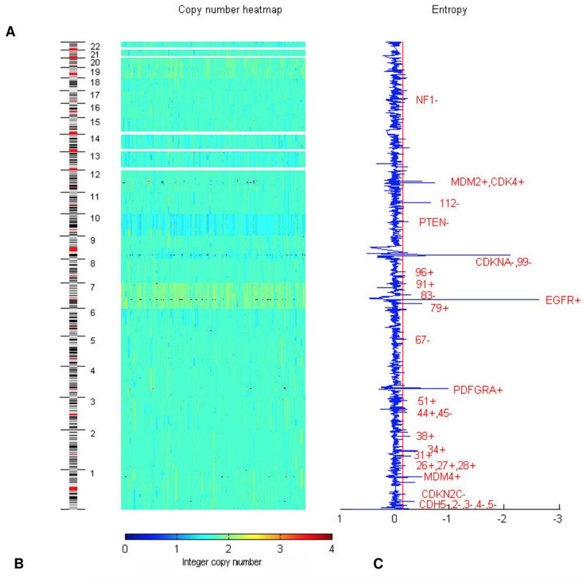

b i t . l y / a p p s l i v e r p o o l
An agenda for Health Informatics research in Liverpool
Engineering Learning Healthcare Systems across digital neighborhoods
Jonas S Almeida PhD,
Professor, Chief Technology Officer, Dept Biomedical Informatics, Stony Brook Univ (SUNY), NY
Abstract
"My excitement about this position is that it configures a broad transdisciplinary domain of enquiry that is nevertheless narrowly driven towards the well-defined user-facing challenges of developing a Learning Healthcare System. This technology-intensive tension has many components, from organizational to quantitative, targeted by my research on Software Systems Engineering, particularly those involving Machine Learning and Cloud/Web Computing."
Health Informatics beyond the Data Deluge
Illustrative examples: http://bit.ly/KMestimator, http://bit.ly/loadsparcs, http://bit.ly/pqiSuffolk, http://bit.ly/tcgascope, http://bit.ly/vcfProto.

Freire P, M Vilela, HF Deus, YW Kim, D Koul, H Colman, KD Aldape, O Bogler, WKA Yung, K Coombes, GB Mills, AT Vasconcelos, JS Almeida (2008) Exploratory Analysis of the Copy Number Alterations in Glioblastoma Multiforme. PLoS ONE 3(12). [PMID19115005] [Entropy calculation].
Robbins DE, A Gruneberg, HF Deus, MM Tanik, JS Almeida (2013) Bioinformatics 4(17) [PMID 23595662 ][link]

b i t . l y / a p p s l i v e r p o o l
Almeida JS, Hajagos J, Crnosija I, T Kurc, M Saltz,
J Saltz (2015) OpenHealth Platform for Interactive Contextualization of Population Health Open Data. Proceedings AMIA 2015: 297-305
[PMID26958160]
 [link]
[link]

b i t . l y / a p p s l i v e r p o o l
Education as the ultimate Interface
Bremer E, T Kurc , Y Gao , J Saltz , JS Almeida (2017) Safe “cloudification” of large images through picker APIs. AMIA Annu Symp Proc. 2016:342-351.[28269829].
Alterovitz G, DA Dean II, C Goble, MR Crusoe, S Soiland-Reyes, A Bell, A Hayes, C Hadley S King IV, D Taylor, E Johanson, EE Thompson, E Donaldson, H Morizono, HS Tsang, J Goecks, J Yao, JS Almeida, K Krampis, L Guo, M Walderhaug, P Walsh, R Kahsay, S Gottipati, T Bloom, Y Lai, V Simonyan, R Mazumder (2017) Enabling Precision Medicine via standard communication of NGS provenance, analysis, and results. bioRxiv [doi.org/10.1101/191783].
b i t . l y / a p p s l i v e r p o o l
Crossing neighborhoods
Almeida JS, C Chen, R Gorlitsky, R Stanislaus, M Aires-de-Sousa, P Eleutério, JA Carriço, A Maretzek, A Bohn, A Chang, F Zhang, R Mitra, GB Mills, X Wang, HF Deus (2006) Data integration gets 'Sloppy'. Nature Biotechnology 24(9):1070-1071 [16964209].